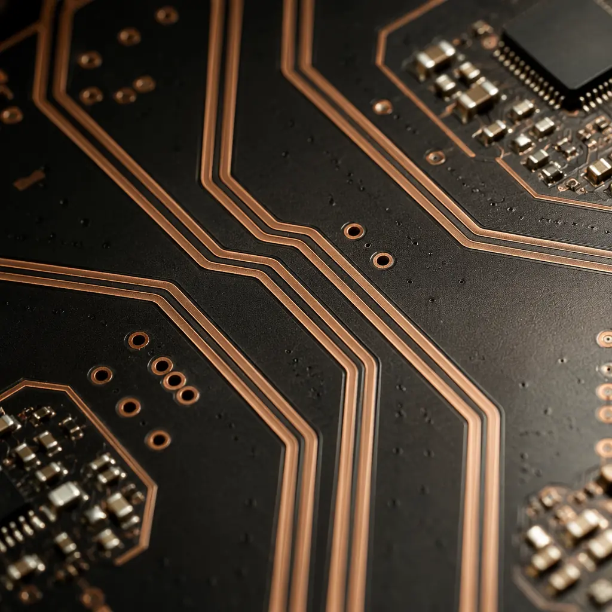
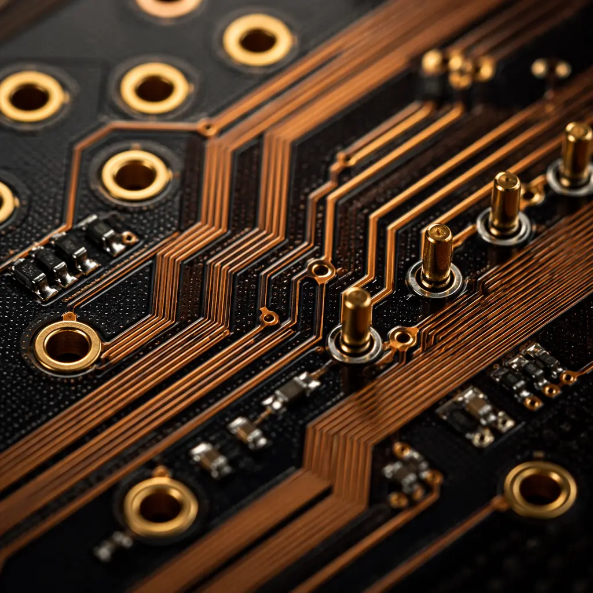

USB-C has become the universal connector standard — from smartphones and laptops to industrial peripherals and medical devices. But designing a PCB that reliably passes USB 3.2 Gen 2 (10 Gbps) or USB4 (40 Gbps) signals while delivering up to 100W of power is not trivial. A single impedance discontinuity, misplaced ESD diode, or undersized power trace can cause negotiation failures, data errors, or thermal shutdown.
At Huaxing PCBA, we manufacture USB-C boards across 8 SMT lines for consumer electronics, industrial IoT, and medical device customers. This guide distills the layout rules our engineering team applies daily — from differential pair routing to PD power path design — so your next USB-C design passes compliance on the first spin.

USB-C Pinout and Signal Groups — What the PCB Designer Must Know
The USB-C receptacle has 24 pins arranged symmetrically so the connector works in either orientation. From a PCB layout perspective, these pins break into four signal groups, each with distinct routing requirements:
SuperSpeed Differential Pairs (TX1±, RX1±, TX2±, RX2±) — 4 lanes at up to 10 Gbps per lane
These are the most demanding signals on the board. Each pair requires controlled 90Ω differential impedance (±10%), intra-pair skew under 5 mils, and continuous reference plane beneath. For USB4 40 Gbps designs, consider low-loss laminate materials like Megtron 6 or Tachyon-100G. Route these pairs on the top layer with no vias if possible; each via stub acts as a stub filter at these frequencies.
High-Speed D+/D− (USB 2.0) — 480 Mbps differential pair
Legacy USB 2.0 runs over a dedicated differential pair that is duplicated on both rows of the connector (pins A6/A7 and B6/B7). Route as 90Ω differential pair, but the tolerance is more forgiving than SuperSpeed — ±15% is acceptable. Keep away from noisy switching nodes like DC-DC converter inductors. For mixed-signal boards, see our mixed-signal PCB design guide.
CC1/CC2 Configuration Channel — 300 kbps single-ended
The CC pins handle orientation detection, power role negotiation, and Alternate Mode entry (DisplayPort, Thunderbolt). These are low-speed but must be routed with care — keep away from switching noise and add 5.1 kΩ pull-down resistors (for UFP/sink devices) within 10 mm of the connector. ESD protection on CC lines is mandatory; use low-capacitance TVS diodes (<5 pF).
VBUS Power and GND — up to 20V/5A (100W PD 3.0)
Four VBUS pins and four GND pins carry all power. For a 5A design, you need at least 50 mils of trace width per amp on 1oz copper — that means multiple parallel VBUS pins must be stitched into a single wide plane, not daisy-chained. Use 2oz or heavier copper for high-current USB-C power boards. Place bulk decoupling capacitance (10 μF + 0.1 μF) within 5 mm of the connector VBUS pins.
Key Takeaway: USB-C is four independent signal groups on one connector. Treat SuperSpeed pairs like RF transmission lines, protect CC lines with low-C ESD diodes, and size VBUS traces for the full 5A rating — even if your current product only draws 15W. Future-proofing the power path costs almost nothing at layout time.
Differential Impedance Routing for SuperSpeed Lanes
USB 3.2 Gen 2 and USB4 signals are essentially microwave-frequency transmissions shrunk onto a PCB. At 10 Gbps, the Nyquist frequency is 5 GHz — well into the regime where every impedance discontinuity creates a reflection that closes the eye diagram.

Here are the non-negotiable rules for SuperSpeed differential pair routing:
| Parameter | USB 3.2 Gen 1 (5 Gbps) | USB 3.2 Gen 2 (10 Gbps) | USB4 Gen 3 (40 Gbps) |
|---|---|---|---|
| Differential Impedance | 90Ω ±15% | 90Ω ±10% | 85Ω ±10% (TBT3 mode) |
| Intra-Pair Skew | <10 mil | <5 mil | <2 mil |
| Max Via Count per Lane | 4 | 2 | 0 (top-layer preferred) |
| Reference Plane Gap | <5× dielectric height | <3× dielectric height | No splits under pair |
| Min Pair-to-Pair Spacing | 3× trace width | 4× trace width | 5× trace width |
| Recommended Laminate | FR-4 (standard Tg) | FR-4 High-Tg or mid-loss | Megtron 6 / Tachyon-100G |
The most common failure we see in customer Gerber files is broken reference planes. When a differential pair crosses a plane split — even a narrow one — the return current must find an alternate path, creating a large loop area and radiated EMI. Always inspect your stackup with a 2D field solver to verify continuous reference under every SuperSpeed pair. For detailed stackup planning, refer to our PCB stackup design guide.
ESD Protection Strategy for USB-C Ports
USB-C ports face a harsh ESD environment — every time a user plugs in a cable, the connector pins are exposed to potential discharge. The USB-IF specification requires ±8 kV contact discharge survival per IEC 61000-4-2, but real-world ESD events frequently exceed 15 kV, especially in dry environments.
Place TVS Diodes Within 2 mm of Connector Pads
ESD current rise times are sub-nanosecond. Every millimeter of trace between the connector pin and the TVS diode adds ~5 nH of parasitic inductance, which creates a voltage overshoot at the protected IC pin: V_overshoot = V_clamp + L × di/dt. At 15 kV ESD, di/dt exceeds 30 A/ns — a 2 mm trace (10 nH) produces 300V of overshoot on top of the TVS clamp voltage. Use 0201 or 0402 package TVS diodes placed directly adjacent to connector pads.
Select Low-Capacitance Diodes for SuperSpeed Lines
TVS diode junction capacitance adds directly to the differential pair's capacitive load. For 10 Gbps SuperSpeed lanes, keep diode capacitance below 0.3 pF. For CC/SBU lines, 5 pF is acceptable. Recommended parts: Nexperia PESD5V0U1BA (0.28 pF, 5V) for SuperSpeed; Semtech RClamp0551P (0.22 pF) for USB4. High-capacitance diodes on SuperSpeed lines are the #1 cause of USB compliance test failures we observe at the factory.
Route ESD Current Directly to Chassis Ground — Not Signal Ground
The ESD discharge path must go to the chassis/shield, not the board's signal ground plane. Create a dedicated ESD guard ring around the USB-C connector footprint, connected to chassis ground through multiple vias. Bridge signal ground and chassis ground at exactly one point (near the power supply input) with a 1 MΩ/1 nF parallel RC network. Routing ESD current through signal ground couples noise into every IC on the board.
Procurement Tip: When reviewing PCB fab quotes for USB-C designs, ask whether the manufacturer performs TDR impedance testing on every panel. At Huaxing PCBA, we run 100% TDR verification on controlled-impedance boards, catching ±2Ω deviations before they ship. This single quality gate prevents field failures that cost 50× more to fix than to prevent.
USB Power Delivery — PCB Layout for 100W Power Paths
USB PD 3.1 extends to 240W (48V/5A), but in practice most designs today target 60-100W (20V/3-5A). Delivering 5A through a USB-C connector requires careful thermal management of both the connector and the PCB traces.
Size VBUS Traces for DC Drop Under 50 mV at Full Load
At 5A, a 10 mΩ trace resistance drops 50 mV — already consuming 250 mW as heat in the trace alone. For 1oz copper, you need a trace width of approximately 150 mils to achieve 10 mΩ over a 2-inch run. Use 2oz copper to halve the required width. Flood-fill VBUS as a polygon on a dedicated power layer, not as a routed trace. Every via in the VBUS path adds ~0.5 mΩ — use at least 6 parallel vias when transitioning between layers.
Place Bulk Capacitance Within 5 mm of Connector VBUS Pins
USB PD negotiates power contracts over the CC line while VBUS is cold (0V). When the source switches VBUS on, the inrush current into the sink's input capacitance can momentarily exceed 10A. A 10 μF MLCC (X7R, 25V) in 0805 or 1206 package placed within 5 mm of the connector absorbs this surge without ringing. Add a 0.1 μF in parallel for high-frequency bypass. For 100W+ designs, consider a thermal pad under the USB-C connector tied to the ground plane.
Use a PD Controller with Integrated Gate Drivers and Sense Resistors
Discrete PD implementations (external MOSFETs, separate current-sense amplifier) consume board area and add failure points. Modern single-chip PD controllers (Infineon CYPD, ST STUSB, TI TPS65987) integrate the power path and CC logic. Place the PD controller within 20 mm of the connector to minimize CC line length. For automotive or industrial USB-C designs requiring higher isolation voltage, use galvanically isolated PD controllers with reinforced insulation.
Common USB-C Layout Mistakes That Fail Compliance
After reviewing hundreds of USB-C board designs at our Shenzhen factory, these are the recurring issues that cause first-spin failures:
| Mistake | Symptom | Fix |
|---|---|---|
| Missing or wrong CC pull-down resistor | No VBUS from source; port dead | 5.1 kΩ ±10% on each CC pin to GND for sink devices |
| SuperSpeed pairs routed over plane split | Eye diagram closure, USB 2.0 fallback | Re-route to avoid split; use stitching caps across gap if unavoidable |
| TVS diode >5 mm from connector | ESD damage to PD controller after ~100 plug cycles | Move diodes to within 2 mm; use 0201 package |
| VBUS trace width calculated at 20°C rise, actual ΔT >40°C | Trace discoloration, intermittent disconnects | Derate ampacity to 50% of IPC-2152 values for inner layers |
| No chassis-ground connection at connector shield | EMI radiated emissions failure at 480 MHz | Connect shield to chassis GND through 4+ vias at connector footprint |
| Pin swapping for layout convenience without updating schematic | TX connects to RX, no link established | Verify TX→RX and RX→TX connections in schematic review |
Design Checklist Before Sending Gerber Files
Use this 8-point checklist as a final review before releasing your USB-C board for fabrication:
Verify differential impedance with a 2D field solver (not just stackup calculator)
A stackup calculator assumes ideal planes — a field solver accounts for actual trace geometry and adjacent copper. At 10 Gbps, the difference matters.
Confirm all SuperSpeed lanes have continuous reference plane — no splits, no voids
Use your CAD tool's "plane inspection" view. Every pair needs unbroken ground beneath its entire length.
Check CC line pull-down resistors: 5.1 kΩ ±10%, placed within 10 mm of connector
A common error: using the wrong value or forgetting to place both resistors (one per CC pin).
Verify TVS diode capacitance <0.5 pF on SuperSpeed lines
If you used a generic 5 pF ESD diode array, replace it. 5 pF creates a 3 dB loss at 5 GHz on a 90Ω line.
VBUS trace/polygon IR drop under 50 mV at maximum negotiated current
Simulate in your CAD tool's PDN analyzer. If >50 mV, add copper or increase to 2oz.
Connector shield tied to chassis ground through ≥4 stitching vias
Single-via shield connections are the top cause of USB-C radiated EMI failures.
TX→RX crossover verified in schematic netlist
Host TX pairs connect to device RX pairs. Pin-swap for routing convenience must be reflected in the schematic.
Request TDR impedance coupon on fabrication drawing
Specify that each panel includes an impedance test coupon at the same layer stack as the production board. Without a TDR coupon, your manufacturer cannot guarantee impedance within tolerance.
Following these eight rules eliminates roughly 80% of the USB-C compliance failures we diagnose at our Shenzhen factory. For designs pushing USB4 40 Gbps speeds, add one more: engage your PCB fab's engineering team during stackup design — don't wait until Gerber submission. At Huaxing PCBA, our DFM review catches impedance mismatches before they become boards.